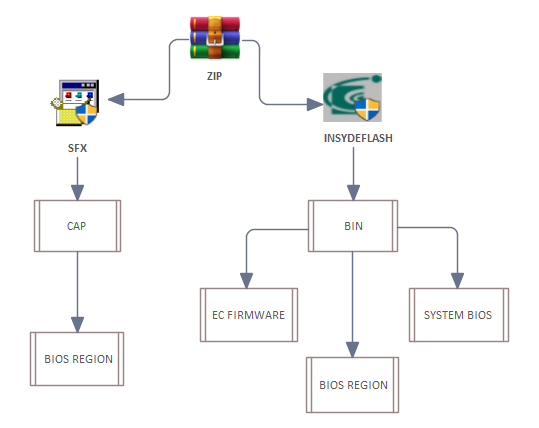
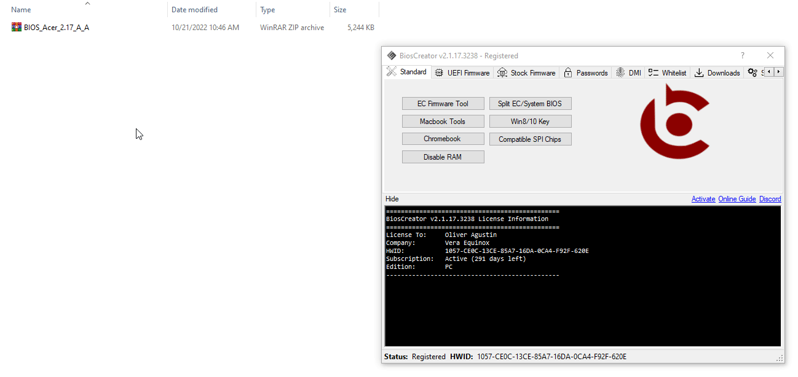
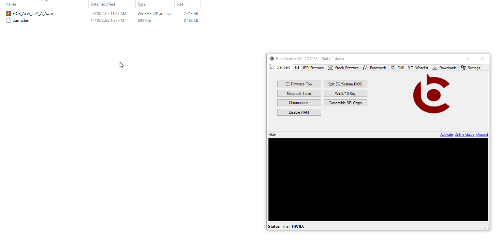
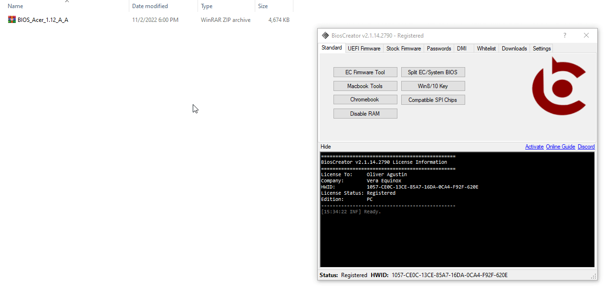
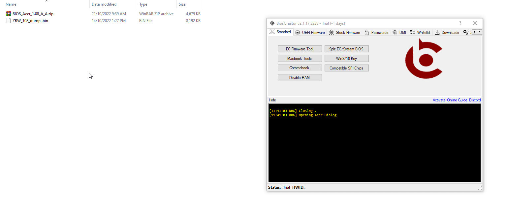

<style>
    .center {
        display: block;
        margin-left: auto;
        margin-right: auto;
        width: 50%;
      }

    a {
      text-decoration: none;
      display: inline-block;
      padding: 8px 16px;
    }
    
    a:hover {
      background-color: #ddd;
      color: black;
    }
    
    .previous {
      background-color: #f1f1f1;
      color: black;
    }
    
    .next {
      background-color: #160042;
      color: white;
    }
    </style>

<section class="support section bg-gray">
	<div class="container">
    <div class="container" style="text-align:justify; margin-bottom:50px;">
      <h4 class="join">Acer</h4>
      <p>Most Acer laptops utilizes InsydeFlash UEFI BIOS. Follow this general steps to create a stock firmware. You may also check other examples and also a flowchart is shown below as a guide for extracting firmware for Acer.</p>
        <li>How to extract InsydeFlash bios update?</li>
        <li>How to split System BIOS and EC firmware bios bin file?</li>
        

    <h2>Procedure for Creating Acer Stock Firmware</h2>
        <ol>
            <li>Open BiosCreator and click Acer (InsydeFlash) button</li>
            <li> A window will popup similar to the image below.</li>
            <li>Drag the bios update file that you downloaded from Acer (1) to the InsydeFlash BIOS Extractor dialog (2), for example Acer v5-561p, then click the Extract button (3). You should see the extracted file as shown in (4). Note: Alternatively, you can also achieve this task by using your favorite decompression sotware (Winrar, 7Zip, etc.)</li>
            <li>Drag the file extracted file - V5WE2217.EXE (1) to the InsydeFlash BIOS Extractor dialog (2) and click Extract button (3), again. You should see the extracted firmware (4), ready to flash using your favorite SPI Programmer.</li>
        </ol>
<br>
        <h2>Example</h2>
        <p>EC FIRMWARE/SYSTEM BIOS</p>
        

        <p>SFX/BIOS REGION</p>
        

        <p>SYSTEM BIOS</p>
        

        <p>ISFLASH/BIOS REGION</p>
        

    <a href="{{ site.baseurl }}/getting-started/requirements" class="previous">&laquo; Previous</a>
    <a href="{{ site.baseurl }}/stock-firmware/hp" class="next">Next &raquo;</a>

		</div> <!-- End row -->
	</div> <!-- End container -->
</section> <!-- End section -->